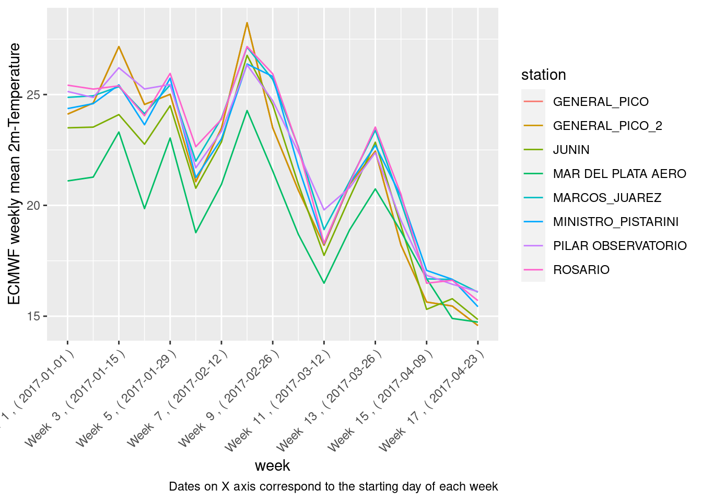
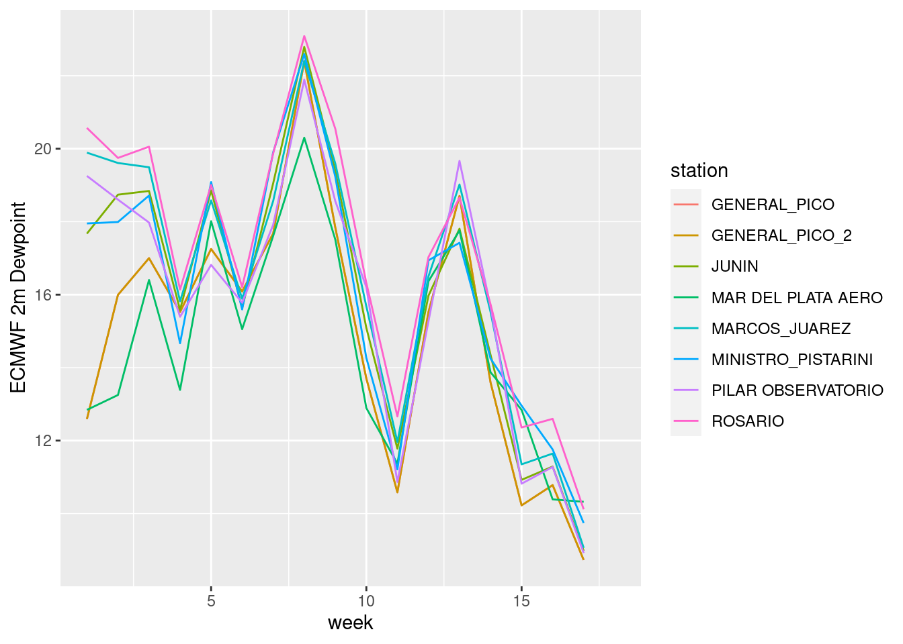
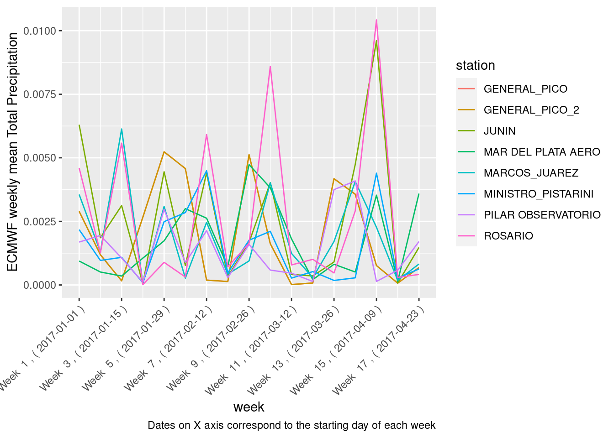

Last updated: 2021-09-08
Checks: 7 0
Knit directory: met_data/
This reproducible R Markdown analysis was created with workflowr (version 1.6.2). The Checks tab describes the reproducibility checks that were applied when the results were created. The Past versions tab lists the development history.
Great! Since the R Markdown file has been committed to the Git repository, you know the exact version of the code that produced these results.
Great job! The global environment was empty. Objects defined in the global environment can affect the analysis in your R Markdown file in unknown ways. For reproduciblity it’s best to always run the code in an empty environment.
The command set.seed(20210902) was run prior to running the code in the R Markdown file. Setting a seed ensures that any results that rely on randomness, e.g. subsampling or permutations, are reproducible.
Great job! Recording the operating system, R version, and package versions is critical for reproducibility.
Nice! There were no cached chunks for this analysis, so you can be confident that you successfully produced the results during this run.
Great job! Using relative paths to the files within your workflowr project makes it easier to run your code on other machines.
Great! You are using Git for version control. Tracking code development and connecting the code version to the results is critical for reproducibility.
The results in this page were generated with repository version 2db9030. See the Past versions tab to see a history of the changes made to the R Markdown and HTML files.
Note that you need to be careful to ensure that all relevant files for the analysis have been committed to Git prior to generating the results (you can use wflow_publish or wflow_git_commit). workflowr only checks the R Markdown file, but you know if there are other scripts or data files that it depends on. Below is the status of the Git repository when the results were generated:
Ignored files:
Ignored: .Rhistory
Ignored: .Rproj.user/
Untracked files:
Untracked: install.R
Untracked: runtime.txt
Unstaged changes:
Modified: analysis/_site.yml
Note that any generated files, e.g. HTML, png, CSS, etc., are not included in this status report because it is ok for generated content to have uncommitted changes.
These are the previous versions of the repository in which changes were made to the R Markdown (analysis/past-data_retrieval.Rmd) and HTML (docs/past-data_retrieval.html) files. If you’ve configured a remote Git repository (see ?wflow_git_remote), click on the hyperlinks in the table below to view the files as they were in that past version.
| File | Version | Author | Date | Message |
|---|---|---|---|---|
| html | 2db9030 | franfram | 2021-09-08 | Build site. |
| Rmd | 9f87963 | franfram | 2021-09-08 | wflow_publish(c("analysis/about.Rmd", "analysis/license.Rmd", |
| html | 17654d1 | franfram | 2021-09-04 | Build site. |
| Rmd | b331573 | franfram | 2021-09-04 | wflow_publish(c("analysis/forecast-data_retrieval.Rmd", "analysis/past-data_retrieval.Rmd", |
| html | 7ee1c45 | franfram | 2021-09-04 | Build site. |
| Rmd | 9b1182c | franfram | 2021-09-04 | wflow_publish(str_c("analysis/", paths)) |
| html | 6cb50d2 | franfram | 2021-09-02 | Build site. |
| html | 466f366 | franfram | 2021-09-02 | Build site. |
| html | 0a0b0f1 | franfram | 2021-09-02 | Build site. |
| html | d2484e0 | franfram | 2021-09-02 | Build site. |
| Rmd | dbed7f7 | franfram | 2021-09-02 | wflow_publish(c("analysis/past-data_retrieval.Rmd", "analysis/about.Rmd", |
| html | 364ad61 | franfram | 2021-09-02 | Build site. |
| Rmd | 9217572 | franfram | 2021-09-02 | wflow_publish("analysis/past-data_retrieval.Rmd") |
| html | e1564f4 | franfram | 2021-09-02 | Build site. |
| Rmd | a23c3c2 | franfram | 2021-09-02 | wflow_publish(c("analysis/past-data_retrieval.Rmd", "analysis/_site.yml")) |
representing averages over a model grid box and model time step.
Data retrieval
Hide import cdsapi from pyprojroot import here
if name == ‘main’:
c = cdsapi.Client()
COORDS = {
"GENERAL_PICO":[-35.696, -63.758],
"MINISTRO_PISTARINI":[-34.822, -58.536],
"MARCOS_JUAREZ":[-32.684, -62.158],
"MAR DEL PLATA AERO":[-37.933, -57.583],
"PILAR OBSERVATORIO":[-31.667, -63.883],
"JUNIN":[-34.546, -60.931],
"ROSARIO": [-32.904, -60.785],
"GENERAL_PICO_2":[-35.697, -63.759]
}
VARIABLES = [
'2m_temperature', representing averages over a model grid box and model time step.Data retrieval
Hide import cdsapi from pyprojroot import here
if name == ‘main’:
c = cdsapi.Client()
COORDS = {
"GENERAL_PICO":[-35.696, -63.758],
"MINISTRO_PISTARINI":[-34.822, -58.536],
"MARCOS_JUAREZ":[-32.684, -62.158],
"MAR DEL PLATA AERO":[-37.933, -57.583],
"PILAR OBSERVATORIO":[-31.667, -63.883],
"JUNIN":[-34.546, -60.931],
"ROSARIO": [-32.904, -60.785],
"GENERAL_PICO_2":[-35.697, -63.759]
}
VARIABLES = [
'2m_temperature', representing averages over a model grid box and model time step.Data retrieval
Hide import cdsapi from pyprojroot import here
if name == ‘main’:
c = cdsapi.Client()
COORDS = {
"GENERAL_PICO":[-35.696, -63.758],
"MINISTRO_PISTARINI":[-34.822, -58.536],
"MARCOS_JUAREZ":[-32.684, -62.158],
"MAR DEL PLATA AERO":[-37.933, -57.583],
"PILAR OBSERVATORIO":[-31.667, -63.883],
"JUNIN":[-34.546, -60.931],
"ROSARIO": [-32.904, -60.785],
"GENERAL_PICO_2":[-35.697, -63.759]
}
VARIABLES = [
'2m_temperature', representing averages over a model grid box and model time step.Data retrieval
Hide import cdsapi from pyprojroot import here
if name == ‘main’:
c = cdsapi.Client()
COORDS = {
"GENERAL_PICO":[-35.696, -63.758],
"MINISTRO_PISTARINI":[-34.822, -58.536],
"MARCOS_JUAREZ":[-32.684, -62.158],
"MAR DEL PLATA AERO":[-37.933, -57.583],
"PILAR OBSERVATORIO":[-31.667, -63.883],
"JUNIN":[-34.546, -60.931],
"ROSARIO": [-32.904, -60.785],
"GENERAL_PICO_2":[-35.697, -63.759]
}
VARIABLES = [
'2m_temperature', representing averages over a model grid box and model time step.Data retrieval
Hide import cdsapi from pyprojroot import here
if name == ‘main’:
c = cdsapi.Client()
COORDS = {
"GENERAL_PICO":[-35.696, -63.758],
"MINISTRO_PISTARINI":[-34.822, -58.536],
"MARCOS_JUAREZ":[-32.684, -62.158],
"MAR DEL PLATA AERO":[-37.933, -57.583],
"PILAR OBSERVATORIO":[-31.667, -63.883],
"JUNIN":[-34.546, -60.931],
"ROSARIO": [-32.904, -60.785],
"GENERAL_PICO_2":[-35.697, -63.759]
}
VARIABLES = [
'2m_temperature', representing averages over a model grid box and model time step.Data retrieval
Hide import cdsapi from pyprojroot import here
if name == ‘main’:
c = cdsapi.Client()
COORDS = {
"GENERAL_PICO":[-35.696, -63.758],
"MINISTRO_PISTARINI":[-34.822, -58.536],
"MARCOS_JUAREZ":[-32.684, -62.158],
"MAR DEL PLATA AERO":[-37.933, -57.583],
"PILAR OBSERVATORIO":[-31.667, -63.883],
"JUNIN":[-34.546, -60.931],
"ROSARIO": [-32.904, -60.785],
"GENERAL_PICO_2":[-35.697, -63.759]
}
VARIABLES = [
'2m_temperature',This script downloads, wrangles and plots data from the European Centre for Medium-Range Weather Forecasts (ECMWF) using Python’s CDS API https://pypi.org/project/cdsapi/.
Install the CDS API and configure its key https://cds.climate.copernicus.eu/api-how-to
We used the ERA5-land reanalysis dataset https://cds.climate.copernicus.eu/cdsapp#!/dataset/reanalysis-era5-land?tab=overview
Dataset details:
File format: GRIB.
Horizontal resolution: 0.1° x 0.1°.
Temporal resolution: Hourly.
Horizontal and temporal resolution: Global, january 1981 to present.
Variables:
2m temperature (K): Temperature of air at 2m above the surface of land, sea or in-land waters. 2m temperature is calculated by interpolating between the lowest model level and the Earth’s surface, taking account of the atmospheric conditions.
2m dewpoint temperature (K): Temperature to which the air, at 2 metres above the surface of the Earth, would have to be cooled for saturation to occur.It is a measure of the humidity of the air. Combined with temperature and pressure, it can be used to calculate the relative humidity. 2m dew point temperature is calculated by interpolating between the lowest model level and the Earth’s surface, taking account of the atmospheric conditions.
Total precipitation: Accumulated liquid and frozen water, including rain and snow, that falls to the Earth’s surface. It is the sum of large-scale precipitation (that precipitation which is generated by large-scale weather patterns, such as troughs and cold fronts) and convective precipitation (generated by convection which occurs when air at lower levels in the atmosphere is warmer and less dense than the air above, so it rises). Precipitation variables do not include fog, dew or the precipitation that evaporates in the atmosphere before it lands at the surface of the Earth. This variable is accumulated from the beginning of the forecast time to the end of the forecast step. The units of precipitation are depth in metres. It is the depth the water would have if it were spread evenly over the grid box. Care should be taken when comparing model variables with observations, because observations are often local to a particular point in space and time, rather than representing averages over a model grid box and model time step.
import cdsapi
from pyprojroot import here
if __name__ == '__main__':
c = cdsapi.Client()
COORDS = {
"GENERAL_PICO":[-35.696, -63.758],
"MINISTRO_PISTARINI":[-34.822, -58.536],
"MARCOS_JUAREZ":[-32.684, -62.158],
"MAR DEL PLATA AERO":[-37.933, -57.583],
"PILAR OBSERVATORIO":[-31.667, -63.883],
"JUNIN":[-34.546, -60.931],
"ROSARIO": [-32.904, -60.785],
"GENERAL_PICO_2":[-35.697, -63.759]
}
VARIABLES = [
'2m_temperature',
'total_precipitation',
'2m_dewpoint_temperature'
]
YEARS = '2017'
MONTHS = [
'01',
'02',
'03',
'04',
]
DAYS = ['%02d'%(mn) for mn in range(1,32)]
for station in COORDS:
station_point_coord = COORDS[station]*2 # c.retrieve() requires an area to be specified (4 values: North, West, South, East). With this trick, we can specify lat lon values instead.
c.retrieve( # CDS API
'reanalysis-era5-land', # Dataset
{
'variable': VARIABLES,
'format': 'grib',
'time': [
'00:00', '01:00', '02:00',
'03:00', '04:00', '05:00',
'06:00', '07:00', '08:00',
'09:00', '10:00', '11:00',
'12:00', '13:00', '14:00',
'15:00', '16:00', '17:00',
'18:00', '19:00', '20:00',
'21:00', '22:00', '23:00',
],
'day': DAYS,
'month': MONTHS,
'year': YEARS,
'area': station_point_coord,
},
here('./data/' + f'metdata_era5_{station}.grib')) import xarray as xr
import pandas as pd
from pyprojroot import here
COORDS = {
"GENERAL_PICO":[-35.696, -63.758],
"MINISTRO_PISTARINI":[-34.822, -58.536],
"MARCOS_JUAREZ":[-32.684, -62.158],
"MAR DEL PLATA AERO":[-37.933, -57.583],
"PILAR OBSERVATORIO":[-31.667, -63.883],
"JUNIN":[-34.546, -60.931],
"ROSARIO": [-32.904, -60.785],
"GENERAL_PICO_2":[-35.697, -63.759]
}
metdata = {}
for station in COORDS:
# read grib file and convert to data frame
metdata = xr.open_dataset(
here('./data/' + f'metdata_era5_{station}.grib'),
engine = 'cfgrib'
).to_dataframe().rename_axis(['time', 'step', 'lat', 'lon']).reset_index()
# add column for station name
metdata['station'] = pd.Series([f'{station}' for x in range(len(metdata.index))])
# save as csv
metdata.to_csv(here(str('./data/' + f'metdata_era5_{station}.csv'))) library(tidyverse)
library(lubridate)
library(here)
list_csv <- dir(path = here("data"), pattern = "*.csv")
path <- here("data", list_csv)
metdata_2017_raw <- path %>%
lapply(read.csv) %>%
bind_rows() %>%
mutate(
'valid_time' = ymd_hms(valid_time),
'Date' = date(valid_time),
'Time' = format(valid_time, format = "%H:%M:%S"),
'Day' = day(valid_time)
) %>%
mutate( # Kelvin to C°
't2m' = t2m - 273.15,
'd2m' = d2m - 273.15
) %>%
filter(year(Date) == '2017') %>%
select('station', 'lat', 'lon', 'Date', 'Day', 'Time', 't2m', 'tp', 'd2m') %>%
ungroup()
# Compute daily means
metdata_2017_daily <- metdata_2017_raw %>%
group_by(station, lat, lon, Date, Day) %>%
summarise( # compute daily means
't2m_dmean' = mean(t2m),
'tp_dmean' = mean(tp),
'd2m_dmean' = mean(d2m)
) %>%
select('station', 'lat', 'lon', 'Date', 't2m_dmean', 'tp_dmean', 'd2m_dmean') %>%
ungroup()
# Compute weekly means from daily means
metdata_2017_weekly <- metdata_2017_daily %>%
group_by(station, week = week(Date)) %>%
mutate(
't2m_wmean' = mean(t2m_dmean),
'tp_wmean' = mean(tp_dmean),
'd2m_wmean' = mean(d2m_dmean)
) %>%
ungroup()library(ggplot2)
(
plot_temp <- metdata_2017_weekly %>%
ggplot() +
geom_line(aes(x = week, y = t2m_wmean, color = station)) +
labs(y = "ECMWF 2m Temperature")
)
(
plot_temp <- metdata_2017_weekly %>%
ggplot() +
geom_line(aes(x = week, y = d2m_wmean, color = station)) +
labs(y = "ECMWF 2m Dewpoint")
)
(
plot_temp <- metdata_2017_weekly %>%
ggplot() +
geom_line(aes(x = week, y = tp_wmean, color = station)) +
labs(y = "ECMWF Total Precipitation")
)
| Version | Author | Date |
|---|---|---|
| 364ad61 | franfram | 2021-09-02 |
sessionInfo()R version 4.1.1 (2021-08-10)
Platform: x86_64-pc-linux-gnu (64-bit)
Running under: Linux Mint 20.1
Matrix products: default
BLAS: /usr/lib/x86_64-linux-gnu/blas/libblas.so.3.9.0
LAPACK: /usr/lib/x86_64-linux-gnu/lapack/liblapack.so.3.9.0
locale:
[1] LC_CTYPE=en_US.UTF-8 LC_NUMERIC=C
[3] LC_TIME=es_AR.UTF-8 LC_COLLATE=en_US.UTF-8
[5] LC_MONETARY=es_AR.UTF-8 LC_MESSAGES=en_US.UTF-8
[7] LC_PAPER=es_AR.UTF-8 LC_NAME=C
[9] LC_ADDRESS=C LC_TELEPHONE=C
[11] LC_MEASUREMENT=es_AR.UTF-8 LC_IDENTIFICATION=C
attached base packages:
[1] stats graphics grDevices utils datasets methods base
other attached packages:
[1] here_1.0.1 lubridate_1.7.10 forcats_0.5.1 stringr_1.4.0
[5] dplyr_1.0.7 purrr_0.3.4 readr_2.0.1 tidyr_1.1.3
[9] tibble_3.1.4 ggplot2_3.3.5 tidyverse_1.3.1 workflowr_1.6.2
loaded via a namespace (and not attached):
[1] Rcpp_1.0.7 lattice_0.20-44 png_0.1-7 assertthat_0.2.1
[5] rprojroot_2.0.2 digest_0.6.27 utf8_1.2.2 R6_2.5.1
[9] cellranger_1.1.0 backports_1.2.1 reprex_2.0.1 evaluate_0.14
[13] highr_0.9 httr_1.4.2 pillar_1.6.2 rlang_0.4.11
[17] readxl_1.3.1 rstudioapi_0.13 whisker_0.4 jquerylib_0.1.4
[21] Matrix_1.3-4 reticulate_1.20 rmarkdown_2.10 labeling_0.4.2
[25] munsell_0.5.0 broom_0.7.9 compiler_4.1.1 httpuv_1.6.2
[29] modelr_0.1.8 xfun_0.25 pkgconfig_2.0.3 htmltools_0.5.2
[33] tidyselect_1.1.1 fansi_0.5.0 withr_2.4.2 crayon_1.4.1
[37] tzdb_0.1.2 dbplyr_2.1.1 later_1.3.0 grid_4.1.1
[41] jsonlite_1.7.2 gtable_0.3.0 lifecycle_1.0.0 DBI_1.1.1
[45] git2r_0.28.0 magrittr_2.0.1 scales_1.1.1 cli_3.0.1
[49] stringi_1.7.4 farver_2.1.0 fs_1.5.0 promises_1.2.0.1
[53] xml2_1.3.2 bslib_0.3.0 ellipsis_0.3.2 generics_0.1.0
[57] vctrs_0.3.8 tools_4.1.1 glue_1.4.2 hms_1.1.0
[61] fastmap_1.1.0 yaml_2.2.1 colorspace_2.0-2 rvest_1.0.1
[65] knitr_1.33 haven_2.4.3 sass_0.4.0